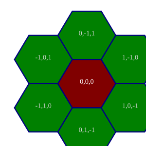
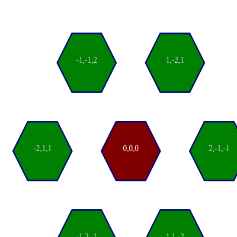

hexgraph is an implementation of Amit Patel's Hexagonal Grids in TypeScript. I have built on the implementation with other ideas, including relationship graphs between grid parts.
I love turn-based roleplaying and strategy games, and I wanted to learn a whole bunch of things about programming and math all at once, so I thought "let's build a game library!" I was intrigued by the hexagonal grid concept in Sid Meier games and thought to use it to learn a language. The point of the exercise is to build -- rather than to use -- the library, so YAGNI doesn't apply.
Clone the repo, npm run deploy && npx http-server to run the demo locally
The mathematical concepts are thoroughly discussed, so I will stick to the hows and whys of my implementation.
I wrote in TypeScript because that's what I'm trying to learn.
I've chosen to use cube coordinates for algorithmic simplicity. All
coordinate-based functions accept cube coordinates, which allows passing
HexNodes around as parameters.


tests
cell labelling
cell groups
cell group overlaps
rotation (next node in a cycle around a node)
redblobgames has code for this for cells, how hard to generalize for nodes?
rounding
nearest cell
nearest edge, nearest vertex
let spot: QRSVector; // this is the location on the grid we're trying to round
let cell: HexNode = Hex.round(spot);
let offset: QRSVector = Hex.subtract(spot, cell);
and then with https://www.redblobgames.com/grids/hexagons/directions.html we have the vertex toward the direction (including sign) of the largest offset magnitude, bob's your uncle. these line up with the diagonal directions, and by the same idea we address the neighbor directions, or pairs of vertex directions.
// vertex directions cycle
[q, -r, s, -q, r, -s] /* or */ [q, -s, r, -q, s, -r]
// edge direction cycle
[(q,-r), (-r,s), (s,-q), (-q,r), (r,-s), (-s,q)]
// or in the other direction
[(q,-s), (-s,r), (r,-q), (-q,s), (s,-r), (-r,q)]
How much do I care about offering both directions? and starting from different nodes? Those things are basically arbitrary, though the order is significant.
pathing
storage
formatter/linter(/minifier?) for html and css
BUG: fix rectangle map (too wide by 1)